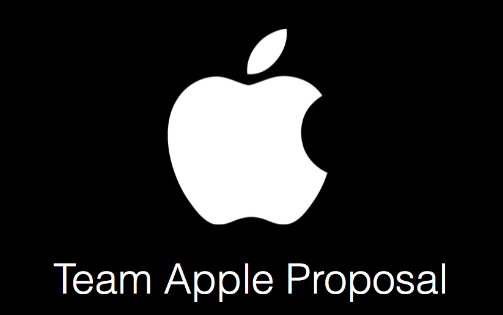
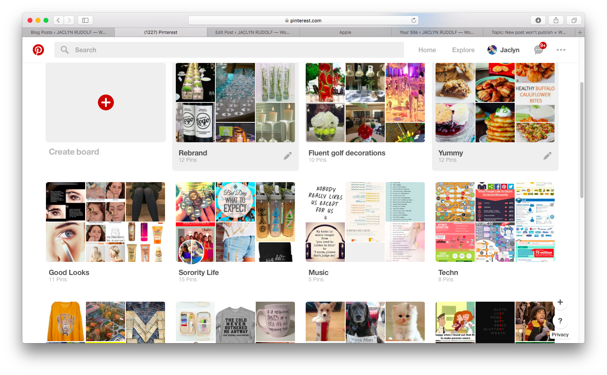
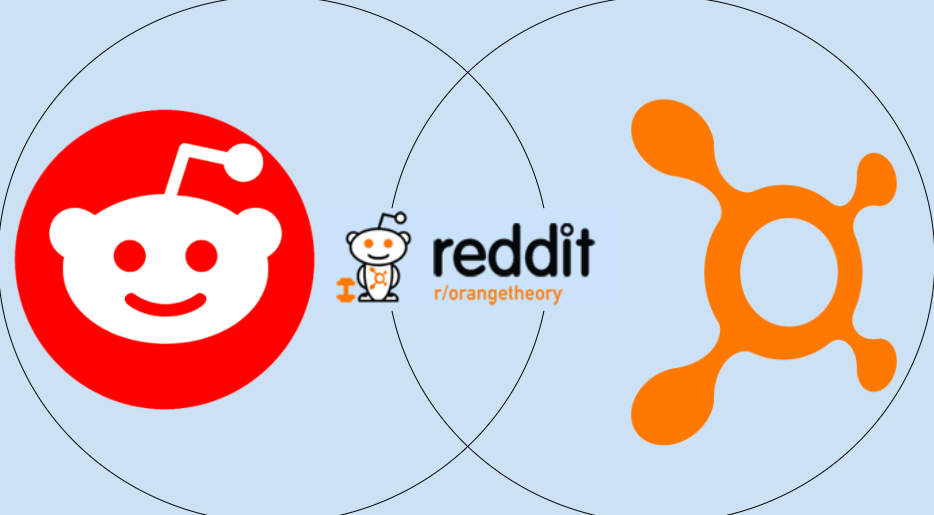
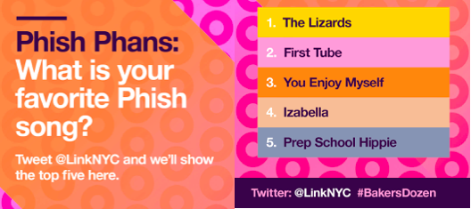

This is a team project that researched and analyzed Apple’s lack of social media presence. We then crafted a proposal to help Apple revamp their online marketing and social media efforts. We presented our ideas to the class about specific strategies to help Apple promote selling, and support products in entirely new and more effective ways via social media. Click here for PDF
I conducted a research project on the social media platform Pinterest. I explored its affordance of allowing a user to navigate through the overload of information on the web in a more efficient manner, as well as how it can assist in business development, and social interaction Click here for PDF
Studied the Orange Theory Fitness subreddit throughout the course of the semester, and how it aligns with different theories about the "online community" Click here for PDF
Co-managed “Phish Phans” campaign to activate around Phish 4-day concert series at Madison Square Garden. Static creative prompted consumers to submit their favorite Phish song via Twitter. I monitored the LinkNYC Twitter account and updated the creatives daily via Adobe InDesign based on the user generated content.
